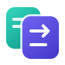

YongilTRANSLATOR On-device AI · EXPERIMENTALOn-device AI
Use your browser’s on-device AI without an account or API key. Prepare the model here, then close this tab once background readiness is confirmed. The browser manages model downloads and where processing takes place. Depending on your PC specifications, it may be very slow and unstable.
Language support depends on your browser’s model. Choose a supported target language; unsupported source languages cannot be translated.
Processes one block at a time. New model downloads may require another preparation click. There is no automatic switch to a cloud provider.